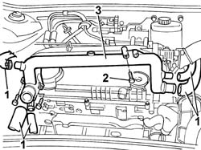

1088D26 rigid intake pipe to water pump - r+r for versions with a/c
- Path
- Procedures > 10 ENGINE > 1088 ENGINE COOLING > 1088D coolant hoses and sleeves > 1088D26 rigid intake pipe to water pump - r+r for versions with a/c
- Kind
- repair procedure (removal / refitting; the operation number is the code)
- Applies to
- engines: 1.9 JTD 8V; all production periods
- Interactive page
- https://sloeber94.github.io/elrnDB-a147/en/#/3025078
Applies to: engines: 1.9 JTD 8V; all production periods
 Removing
Removing
 Refitting
Refitting1016A10 sound-proofing cover - r + r
1072C44 exhaust manifold heat shield on bulkhead - r+r
7055B54 under-engine guard - r r
Position a container suitable for collecting the engine coolant.
Disconnect the lower radiator hose and drain the engine coolant into the container underneath.
1. Disconnect the engine coolant pipes from the rigid pipe.
2. Undo the bolts fixing the rigid water inlet pipe to the cylinder head.
3. Remove the rigid pipe from the engine compartment.

Applies to: engines: 1.9 JTD 8V; all production periods
Refitting
RemovingFit the rigid pipe in its housing in the cylinder head.
Tighten the bolts securing the rigid pipe to the cylinder head to torque.
 | Fastening | Component | Ø | Value (daNm) |
|---|---|---|---|---|
- | Bolt | COOLANT PUMP RIGID INLET PIPE | M6 | (Cylinder head) 0.8 ÷ 1.0 |
Connect the engine coolant pipes to the rigid pipe.
- 1048B44 heat exchanger/manifold pipe - r r
1016A10 sound-proofing cover - r + r